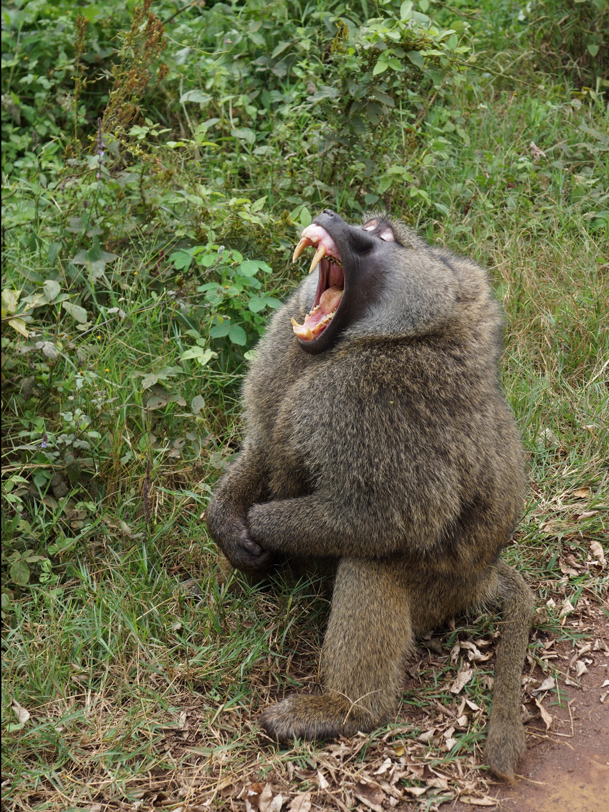

Baboon
Baboons are primates comprising the genus Papio, one of the 23 genera of Old World monkeys. There are six species of baboon: the hamadryas baboon, the Guinea baboon, the olive baboon, the yellow baboon, the Kinda baboon and the chacma baboon. Each species is native to one of six areas of Africa and the hamadryas baboon is also native to part of the Arabian Peninsula. Baboons are among the largest non-hominoid primates and have existed for at least two million years.
Baboons vary in size and weight depending on the species. The smallest, the Kinda baboon, is 50 cm (20 in) in length and weighs only 14 kg (31 lb), while the largest, the chacma baboon, is up to 120 cm (47 in) in length and weighs 40 kg (88 lb). All baboons have long, dog-like muzzles, heavy, powerful jaws with sharp canine teeth, close-set eyes, thick fur except on their muzzles, short tails, and nerveless, hairless pads of skin on their protruding buttocks called ischial callosities that provide for sitting comfort. Male hamadryas baboons have large white manes. Baboons exhibit sexual dimorphism in size, colour and/or canine teeth development.
Baboons are diurnal and terrestrial, but sleep in trees, or on high cliffs or rocks at night, away from predators. They are found in open savannas and woodlands across Africa. They are omnivorous: common sources of food are grasses, seeds, roots, leaves, bark, various fruits, insects, fish, shellfish, rodents, birds, vervet monkeys and small antelopes. Their principal predators are Nile crocodiles, leopards, lions and hyenas. Most baboons live in hierarchical troops containing harems. Baboons can determine from vocal exchanges what the dominance relations are between individuals.
In general, each male can mate with any female; the mating order among the males depends partly on their social rank. Females typically give birth after a six-month gestation, usually to one infant. The females tend to be the primary caretaker of the young, although several females may share the duties for all of their offspring. Offspring are weaned after about a year. They reach sexual maturity around five to eight years. Males leave their birth group, usually before they reach sexual maturity, whereas most females stay in the same group for their lives. Baboons in captivity live up to 45 years, while in the wild they average between 20 to 30 years.

Taxonomy
Six species of Papio are recognized, although there is some disagreement about whether they are really full species or subspecies.
-
Chacma baboon, Papio ursinus, found in southern Africa.
Western, red, or Guinea baboon, Papio papio, found in the far western Africa).
Hamadryas baboon, Papio hamadryas, found in the Horn of Africa and southwestern Arabia).
Olive baboon, Papio anubis, found in the north-central African savanna.
Kinda baboon, Papio kindae, found in miombo woodlands in Central Africa.
-
Yellow baboon, Papio cynocephalus, found in south-central and eastern Africa.
Fossil record
In 2015 researchers found the oldest baboon fossil on record, dated at 2 million years old.
Characteristics
All baboons have long, dog-like muzzles, heavy, powerful jaws with sharp canine teeth, close-set eyes, thick fur except on their muzzles, short tails, and rough spots on their protruding buttocks, called ischial callosities. These calluses are nerveless, hairless pads of skin that provide for the sitting comfort of the baboon. Male baboon sitting on the side of a road. He is looking to the camera's left and has his mouth fully open, showing his large canines. Male olive baboon showing his canines. Ngorongoro National Park, Tanzania, 2014. All baboon species exhibit pronounced sexual dimorphism, usually in size, but also sometimes in colour. Males have much larger upper canines compared to females and use them in threat displays. Males of the hamadryas baboon species also have large white manes.
Behavior and ecology
Baboons are able to acquire orthographic processing skills, which form part of the ability to read.
Habitat and prey
Baboons are terrestrial (ground dwelling) and are found in open savannah, open woodland and hills across Africa. They are omnivorous, highly opportunistic feeders and will eat virtually anything, including grasses, roots, seeds, leaves, bark, fruits, fungus, insects, spiders, worms, fish, shellfish, rodents, birds, vervet monkeys, and small antelopes.[11] They are foragers and are active at irregular times throughout the day and night. They often raid human dwellings, and in South Africa they break into homes and cars in search of food. Baboons will also raid farms, eating crops and preying on sheep, goats and poultry.
Predators
Other than humans the principal predators of baboons are leopards, lions, and spotted and striped hyenas. They are considered a difficult prey for the leopard, though, which is mostly a threat to young baboons. Large males will often confront them by flashing their eyelids, showing their teeth by yawning, making gestures, and chasing after the intruder/predator. Although they are not a prey species, baboons have been killed by the black mamba snake. This usually occurs when a baboon accidentally rouses the snake.

Social systems
The collective noun for baboons is "troop". Most baboons live in hierarchical troops. Group sizes are typically around 50 animals, but can vary between 5 and 250, depending on species, location and time of year. The structure within the troop varies considerably between hamadryas baboons and the remaining species, sometimes collectively referred to as savanna baboons. The hamadryas baboons often appear in very large groups composed of many smaller harems (one male with four or so females), to which females from elsewhere in the troop are recruited while they are still too young to breed. Other baboon species have a more promiscuous structure with a strict dominance hierarchy based on the matriline. The hamadryas baboon group will typically include a younger male, but he will not attempt to mate with the females unless the older male is removed. In the harems of the hamadryas baboons, the males jealously guard their females, to the point of grabbing and biting the females when they wander too far away. Despite this, some males will raid harems for females. Such situations often cause aggressive fights between the males. Visual threats usually accompany these aggressive fights. These include a quick flashing of the eyelids accompanied by a yawn to show off the teeth. Some males succeed in taking a female from another's harem, called a "takeover". In several species, infant baboons are taken by the males as hostages, or used as shields during fights.
Baboons can determine from vocal exchanges what the dominance relations are between individuals. When a confrontation occurs between different families or where a lower-ranking baboon takes the offensive, baboons show more interest in this exchange than those between members of the same family or when a higher-ranking baboon takes the offensive. This is because confrontations between different families or rank challenges can have a wider impact on the whole troop than an internal conflict in a family or a baboon reinforcing its dominance.
Mating
Baboon mating behavior varies greatly depending on the social structure of the troop. In the mixed groups of savanna baboons, each male can mate with any female. The mating order among the males depends partially on their social ranking, and fights between males are not unusual. There are, however, more subtle possibilities; in mixed groups, males sometimes try to win the friendship of females. To garner this friendship, they may help groom the female, help care for her young, or supply her with food. The probability is high that those young are their offspring. Some females clearly prefer such friendly males as mates. However, males will also take infants during fights to protect themselves from harm. A female initiates mating by presenting her swollen rump to the male's face.
In a wild baboon population of the Amboseli ecosystem in Kenya, inbreeding is avoided by mate choice. Inbreeding avoidance through mate choice is thought to only evolve when related possible sexual partners frequently encounter each other and there is a risk of inbreeding depression

Relationship with humansh
In Egyptian mythology, Babi was the deification of the hamadryas baboon and was therefore a sacred animal. It was known as the attendant of Thoth, so is also called the sacred baboon. The 2009 documentary Baboon Woman examines the relationship between baboons and humans in South Africa.
Diseases
Herpesvirus papio family of viruses and strains infect baboons. Their effects on humans are unknown. Humans infected with Mycobacterium tuberculosis can transmit the disease to the primates upon close proximity. Pathogens have a high likelihood of spreading through humans and species of nonhuman primates, such as baboons.